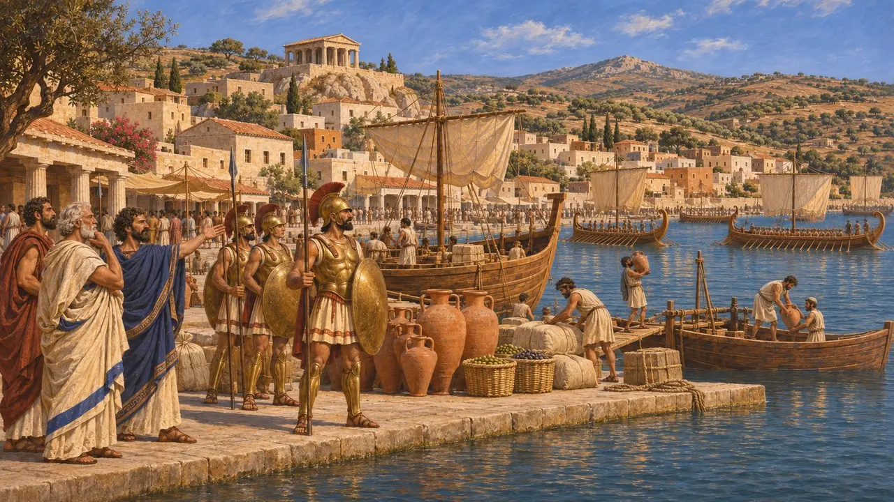
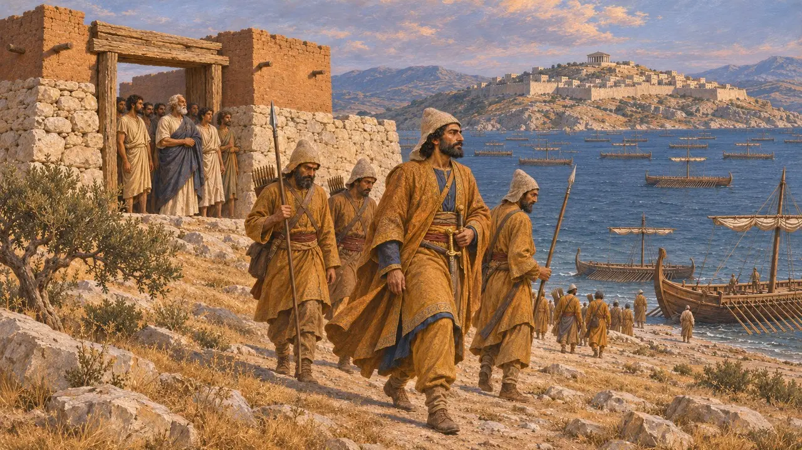
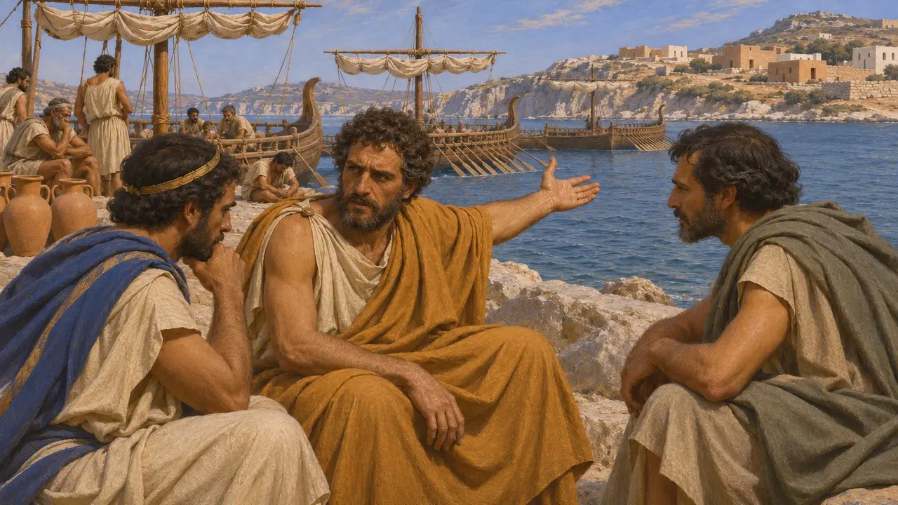
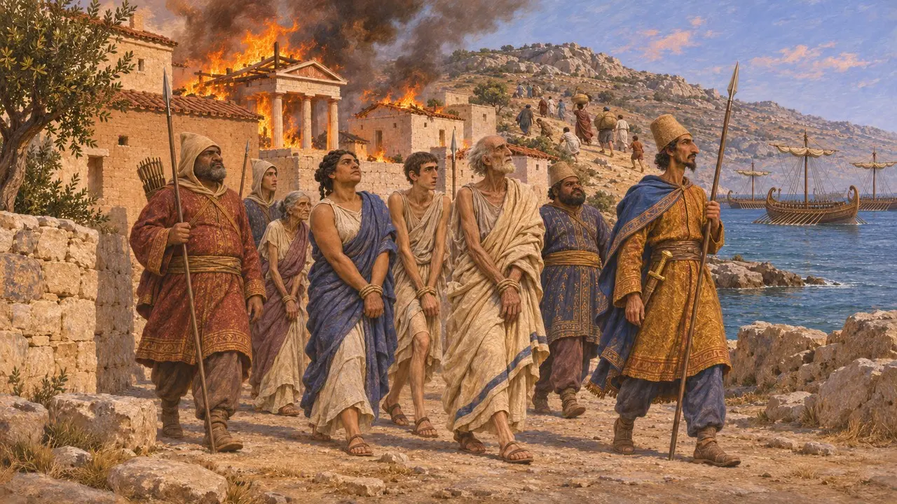
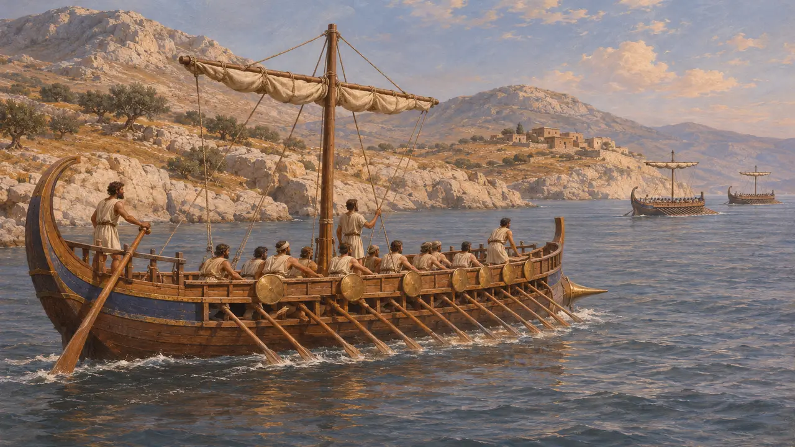

낙소스는 에게해 중부에 있던 부유한 그리스 섬이었다. 헤로도토스는 기원전 499년 페르시아군이 이 섬을 공격했다가 실패한 일이 이오니아 반란의 발발로 이어졌다고 본다. 기원전 490년에는 다티스와 아르타프레네스의 함대가 다시 찾아와 에레트리아와 마라톤으로 가는 길에 이 섬의 도시를 불태웠다.
게임에서: 이 게임에서 낙소스는 낙소스 공성전과 다티스와 아르타프레네스의 원정을 다룬 사건 문서에만 언급됩니다. 낙소스만의 레벨이나 메커니즘은 없습니다.

총독의 욕심을 부를 만큼 풍요로운 섬
고대의 전승헤로도토스에 따르면 기원전 500년경 낙소스는 섬들 가운데 가장 번영한 곳이었다. 그는 낙소스에 호플리테스가 대규모로 있었고 함선도 많았다고 말한다. 또한 민중에게 쫓겨난 부유한 낙소스인들이 밀레토스로 가서 아리스타고라스에게 귀환을 도와 달라고 청했다고 전한다.
Herodotus 5.28-30

기원전 499년의 원정
고대의 전승헤로도토스에 따르면 아리스타고라스는 사트라프 아르타프레네스에게 낙소스를 적은 비용으로 점령할 수 있고 이어서 다른 섬들로도 나아갈 수 있다고 장담했다. 아르타프레네스는 대왕의 승낙을 얻어 메가바테스 휘하에 함선 200척으로 이루어진 함대를 준비했다. 헤로도토스는 메가바테스가 아리스타고라스와 다투고 낙소스인에게 미리 알렸으며, 이들이 재산을 성안으로 들이고 물자를 비축했다고 전한다. 페르시아군은 넉 달 동안 섬을 포위했으나 자금이 바닥나자 망명자들을 위한 요새를 쌓아 주고 물러났다.
Herodotus 5.30-34

반란의 원인인가, 구실에 불과한가
분쟁 중헤로도토스에 따르면 아리스타고라스는 실패 뒤의 처벌을 두려워하여 반란을 택했다. 현대 역사가들은 공격이 있었다는 점은 받아들이지만, 사사로운 다툼 하나로 이처럼 큰 봉기가 일어났다는 설명에는 의문을 품는다. 이들은 페르시아가 세운 참주들에 대한 반감, 공물과 교역도 함께 살피며, 포위가 일어난 정확한 시기는 확실하지 않다.
Herodotus 5.35

기원전 490년 낙소스의 다티스
고대의 전승헤로도토스에 따르면 다티스는 에게해를 가로질러 에레트리아와 아테네를 향해 항해했다. 낙소스에서는 주민들이 산으로 달아났다. 페르시아인은 붙잡은 이들을 노예로 삼고 성소들과 도시를 불태웠다. 이후 함대는 델로스로 나아갔고, 헤로도토스에 따르면 다티스는 그곳의 성소를 해치지 않았다.
Herodotus 6.95-97

사료가 전하지 않는 것
고대의 전승낙소스에 대한 두 차례의 공격을 설명하는 페르시아의 비문이나 점토판은 편찬자들이 아는 한 없으며, 그래서 이 이야기는 한 세대 이상 뒤에 그리스 쪽 입장에서 글을 쓴 헤로도토스에 의존한다. 따라서 기원전 490년에 이 섬이 얼마나 큰 피해를 입었는지는 확실하지 않다. 헤로도토스는 기원전 480년에 참전한 함선 가운데 낙소스의 배도 있었다고 적고 있으며, 이들이 그리스 편으로 넘어갔다고 전한다.
Herodotus 8.46
출처
- Herodotus 5.28-35
- Herodotus 6.95-97
- Herodotus 8.46
- P. Briant, From Cyrus to Alexander, 2002